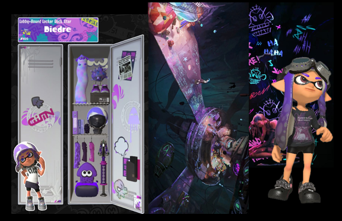
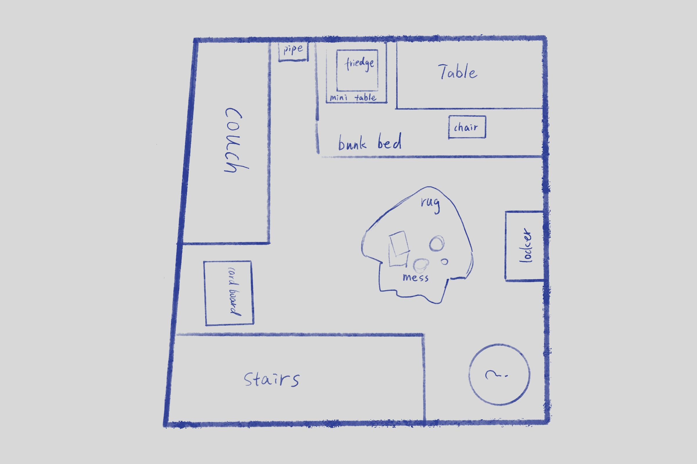
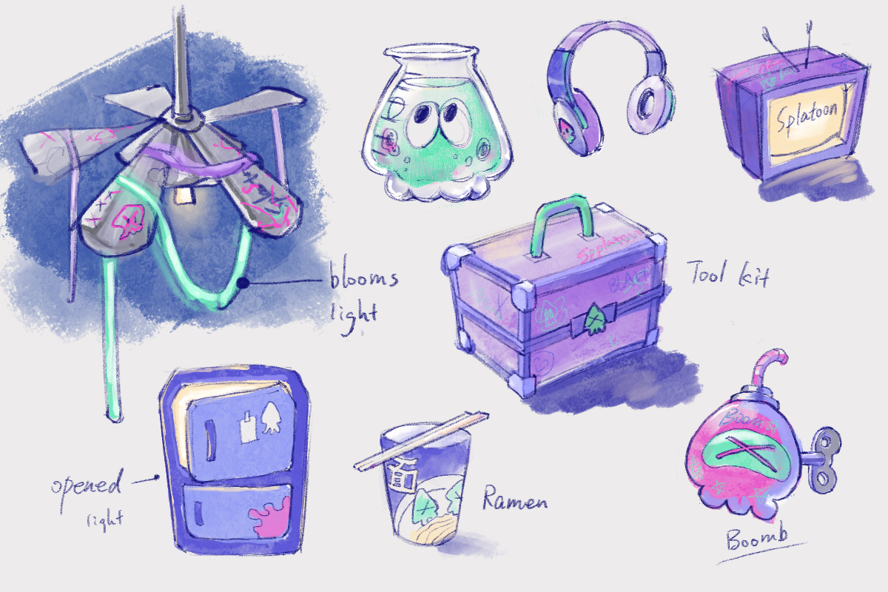
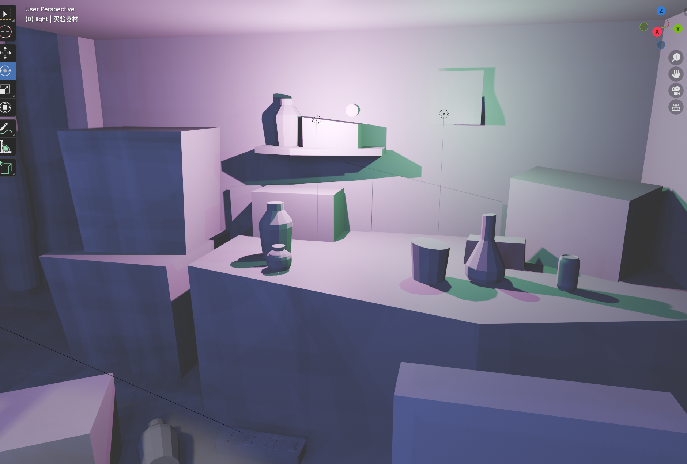
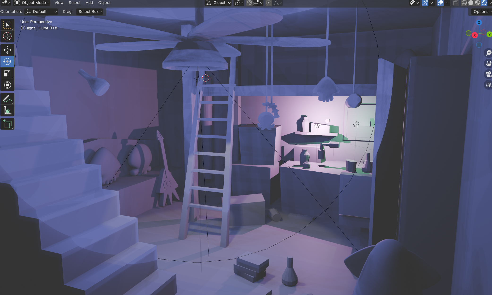
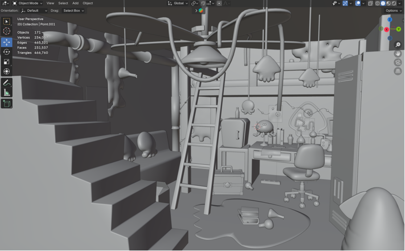
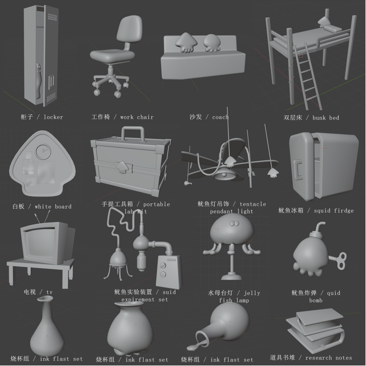
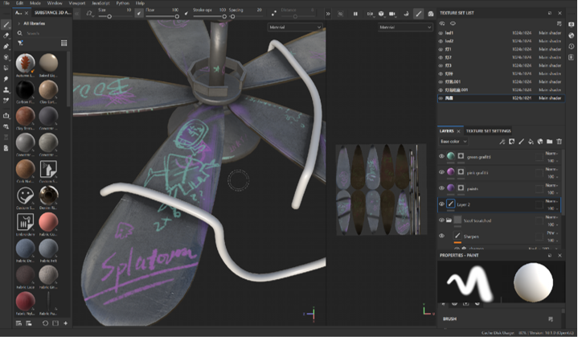
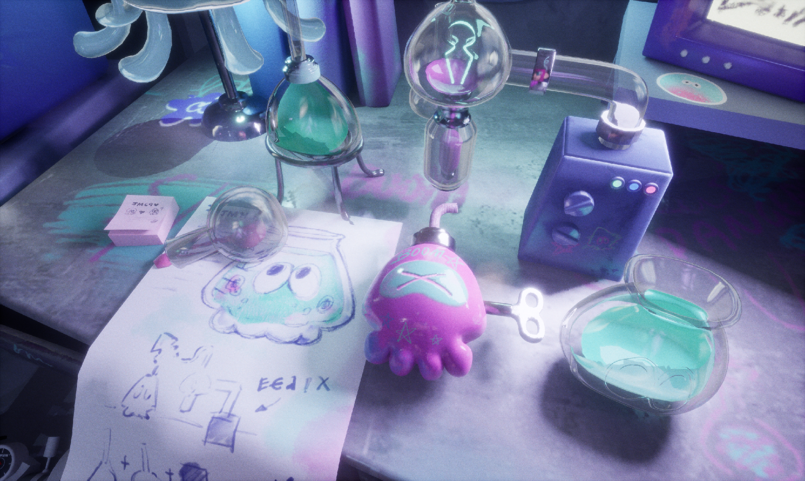

Splatoon 3 Inki Underground Research Lab
SUMMARY
This project covered the complete 3D environment production pipeline, including original concept design, 3D modeling, UV mapping, PBR texturing, scene assembly & lighting setup inside UE5, and lightweight interactive ink effects. Every stage of production was independently completed by myself.
BACKSTORY
This environment was developed as a core assignment for my Game Art course. The project brief required creating a full playable 3D environment built around an original character concept. I designed my custom Splatoon 3 OC named Inki, and built a hidden underground research laboratory as her exclusive workspace.
WORK STEP BY STEP
Concept & World Building
Inki is a passionate young ink squid whose life’s work is inventing brand-new ink-based weapons. Beneath the busy, colorful streets of Splatsville, she hides a secret underground lab, fully concealed under an unremarkable city manhole cover to avoid public attention.
Artistic Reference Research
I conducted extensive visual research on Splatoon’s signature stylized art language, drawing reference from its official environmental architecture and character design language. I also studied Jinx’s chaotic workshop hideout from Arcane, blending messy cyberpunk inventor aesthetics into my underground lab layout.




Blockout & Final Scene Modeling
I started with rough blockout geometry in Blender to validate spatial layout, movement flow and camera framing. After layout approval, I refined all architectural structures and individual scene props into polished high-quality meshes.




Material & Texturing Workflow
Most scene PBR materials were produced within Substance Painter. I used built-in Smart Materials as base surface layers, then hand-painted custom ink graffiti, scratches and sticker decals on top. Special material behaviors including transparent glass and self-glowing emissive ink panels were fine-tuned directly inside UE5 material instances.

Custom hand-painted graffiti decals are the core visual highlight of the scene, matching Splatoon’s signature street ink culture aesthetic.
RESOLUTION
All modeled assets, custom textures, lighting layers and interactive ink VFX were fully integrated into Unreal Engine 5. I built layered skylight + point light lighting groups, calibrated color grading to match Splatoon’s saturated cartoon color palette, and rendered a series of high-quality finished scene shots for portfolio presentation.




OUTCOME
The finished underground lab environment can be packaged as a lightweight walkable demo inside UE5. All modular props and architectural assets are reusable, and can be expanded to build additional Splatoon fan-made scenes in future projects.
REFLECTION
- This project was my first full 3D environment created from concept to final render.I made it in my Core Principle: Game Art class. It helped me master core production skills (modeling, texturing, scene assembly) and develop a personal stylized workflow. I experimented with decal creation, storytelling through props, and making spaces feel "lived-in" rather than simply built.
- Looking back, it feels like I created a mini DLC for a game I love. Through this project, I realized that 3D art isn’t just about technical execution—it’s a way to tell stories and build emotional connections with the audience. I'm excited to continue exploring stylized environment design and developing my own artistic language.